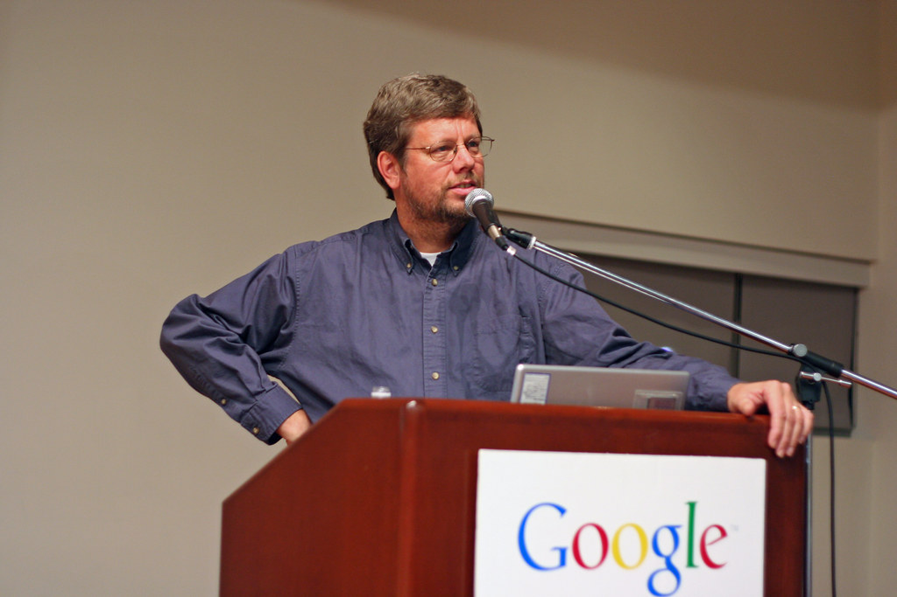
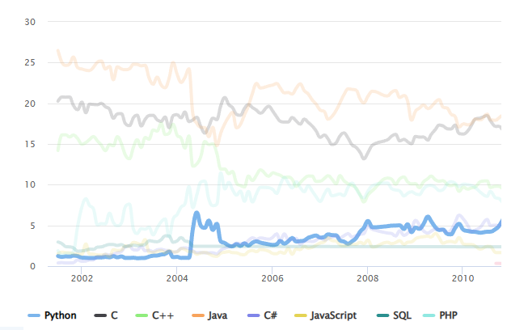
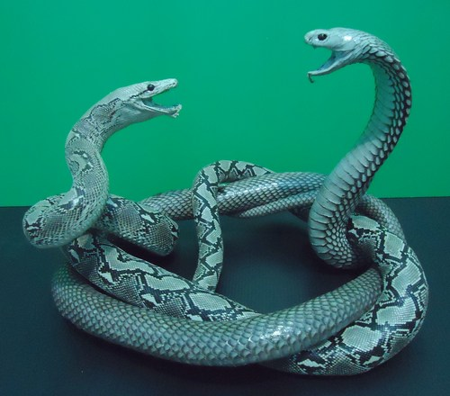
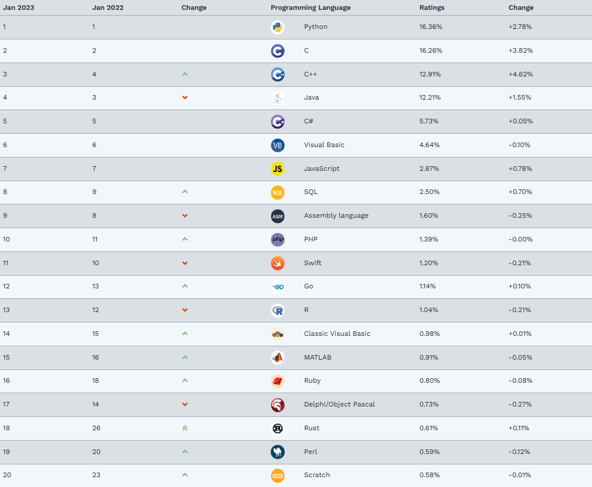

Гвидо ван Россум — голландский программист, прежде всего известный как автор языка программирования Python. До разработки Python участвовал в проекте по написанию языка для обучения программированию — ABC. Лауреат «Free Software Award» 2001 года
История языка программирования Python началась в конце 1980-х. Он задумал Python в 1980-х годах, а приступил к его созданию в декабре 1989 года в центре математики и информатики в Нидерландах. Язык Python был задуман как потомок языка программирования ABC, способный к обработке исключений и взаимодействию с операционной системой Амёба. Ван Россум является основным автором Python и продолжал выполнять центральную роль в принятии решений относительно развития языка вплоть до 12 июля 2018 года
Начало
Первая версия
Python 1.0 появился в январе 1994 года. Основными новыми возможностями, включёнными в этот релиз, были средства функционального программирования. Последней версией, выпущенной Ван Россумом во время работы в центре математики и информатики (CWI), был Python 1.2. С 1995 года Ван Россум продолжил работу над Python-ом в корпорации национальных исследовательских инициатив (CNRI) в городе Рестон, штат Вирджиния, где было выпущено несколько версий языка
К версии 1.4 Python включал в себя множество новых функций, среди которых наиболее заметными были позаимствованные в Modula-3 именованные параметры и встроенная поддержка комплексных чисел. На официальном сайте Python документацию можно найти только с версии 1.4. Уже тогда были все типы, операторы и встроенные функции для создания любых программ. В такой старой версии Python еще можно было использовать как !=, так и <> для сравнения, но с тех времен синтаксис почти не поменялся
К версии 1.4 Python включал в себя множество новых функций, среди которых наиболее заметными были позаимствованные в Modula-3 именованные параметры и встроенная поддержка комплексных чисел. На официальном сайте Python документацию можно найти только с версии 1.4. Уже тогда были все типы, операторы и встроенные функции для создания любых программ. В такой старой версии Python еще можно было использовать как !=, так и <> для сравнения, но с тех времен синтаксис почти не поменялся
Программирование для всех
Во время пребывания в CNRI Ван Россум запустил проект «Программирование для всех», предназначенный сделать программирование доступным для большего числа людей, на основе получения базовой «компьютерной грамотности», подобной базовому знанию языка и математики, требуемых большинству работающих. Python играл центральную роль в этой инициативе, благодаря своей нацеленности на ясный синтаксис. И, хотя Python старается быть простым в изучении в синтаксисе и семантике, простота его использования не-программистами не является главной задачей

Вторая версия
Версия Python 2.0 была выпущена 16 октября 2000 года и включала в себя много новых крупных функций — таких как полный сборщик мусора и поддержка Unicode. Однако наиболее важным из всех изменений было изменение самого процесса развития языка и переход на более прозрачный процесс его создания
С 1 января 2020 года Python 2 перестал поддерживаться
С 1 января 2020 года Python 2 перестал поддерживаться

Популярность Python
Python, по версии TIOBE, во время своей второй версии начал быстро рости в популярности. Если в 90-ых он был примерно на 25 месте в рейтинге, то к 2004 уже входил в 10 самых популярных на равне с PHP и C# и с тех пор лишь рос. Из-за простоты кода у языка большое сообщество и активное сообщество, его начинают изучать в школах. Тогда появляется большинство самых частоиспользуемых сейчас библиотек, фреймворков, систем и т. д., таких как Django с 2005, или Pip с 2008. На нем становится удобней и проще писать программы

Третья версия
На настоящий момент Python 3 считается будущим Python и является версией, которая все еще находится в разработке. Третья версия была выпущена в конце 2008 года с целью устранения внутренних недостатков дизайна предыдущих версий языка
При разработке Python 3 основное внимание уделялось очистке кодовой базы и удалению избыточности, что оставляет возможность решать задачу лишь одним способом. Произошло изменение оператора print, теперь он стал встроенной функцией. Также было проведено улучшение способа разделения целых чисел, была предусмотрена лучшая поддержка Unicode
Сначала Python 3 принимался медленно из-за того, что язык не был совместим с Python 2, что требовало от людей принимать решение о том, какую версию языка использовать. Кроме того, многие библиотеки пакетов были доступны только для 2-й версии
По итогу большая часть библиотек была перенесена на Python 3. Все больше разработчиков предпочитают третью версию
При разработке Python 3 основное внимание уделялось очистке кодовой базы и удалению избыточности, что оставляет возможность решать задачу лишь одним способом. Произошло изменение оператора print, теперь он стал встроенной функцией. Также было проведено улучшение способа разделения целых чисел, была предусмотрена лучшая поддержка Unicode
Сначала Python 3 принимался медленно из-за того, что язык не был совместим с Python 2, что требовало от людей принимать решение о том, какую версию языка использовать. Кроме того, многие библиотеки пакетов были доступны только для 2-й версии
По итогу большая часть библиотек была перенесена на Python 3. Все больше разработчиков предпочитают третью версию

Python сейчас
Python – самый популярный язык, он надежный и безопасный. Специалисты на нем сейчас самые востребованые и получают много денег. После второй версии ему улучшили и упростили синтаксис, дабавили больше пакетов. Многие школы обучают детей этому языку с 8 класса. Python сокращает время и затраты, связанные с разработкой программных проектов. Многие преимущества языка уже сделали его фаворитом среди разработчиков, и он будет оставаться фаворитом в обозримом будущем, так как технология продолжает развиваться. Будущему программисту будет сложно победить в конкуренции с другими без знания этого языка
